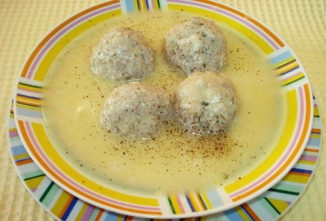

Γιουβαρλάκια Αυγολέμονο

Υλικά
- 750 γρ. κιμά
- ½ φλ. βούτυρο ή μαργαρίνη
- ½ φλ. ρύζι
- ½ φλ. ψιλοκομμένο κρεμμύδι
- 2 αβγά
- 2 3 κ.σ ψιλοκομμένος μαϊντανός
- 1 1-2 λεμόνια
- 2 αλάτι, πιπέρι
Εκτέλεση
- Βάζουμε τον κιμά σε λεκάνη και προσθέτουμε το ρύζι (το οποίο έχουμε πλύνει 2-3 φορές), το κρεμμύδι, το μαϊντανό, το ένα ασπράδι από τα αβγά, λίγο χυμό λεμονιού, αλάτι και πιπέρι.
- Τα ζυμώνουμε καλά.
- Βάζουμε στην κατσαρόλα το βούτυρο να λιώσει.
- Πλάθουμε τα γιουβαρλάκια και τα τοποθετούμε στην κατσαρόλα.
- Μετά τα σκεπάζουμε με ζεστό νερό (και παραπάνω για ζουμερά γιουβαρλάκια) και τα αφήνουμε να βράσουν σε μέτρια φωτιά και να μείνουν με όσο ζουμί θέλουμε.
- Χτυπάμε τους 2 κρόκους και το 1 ασπράδι με το χυμό του λεμονιού, προσθέτουμε ζουμί από τα γιουβαρλάκια για να ζεσταθεί το μείγμα
- και περιχύνουμε τα γιουβαρλάκια.
- Ανακινούμε την κατσαρόλα σε σιγανή φωτιά για να δέσει η σάλτσα.
Λίγες ακόμα συμβουλές
Μπορείτε αντί για βούτυρο ή μαργαρίνη να βάλετε ελαιόλαδο. Επίσης πολλοί περνάνε τα γιουβαρλάκια με αλεύρι πριν τα βάλουν στην κατσαρόλα. Χυλώνει το ζουμάκι πιο πολύ έτσι.